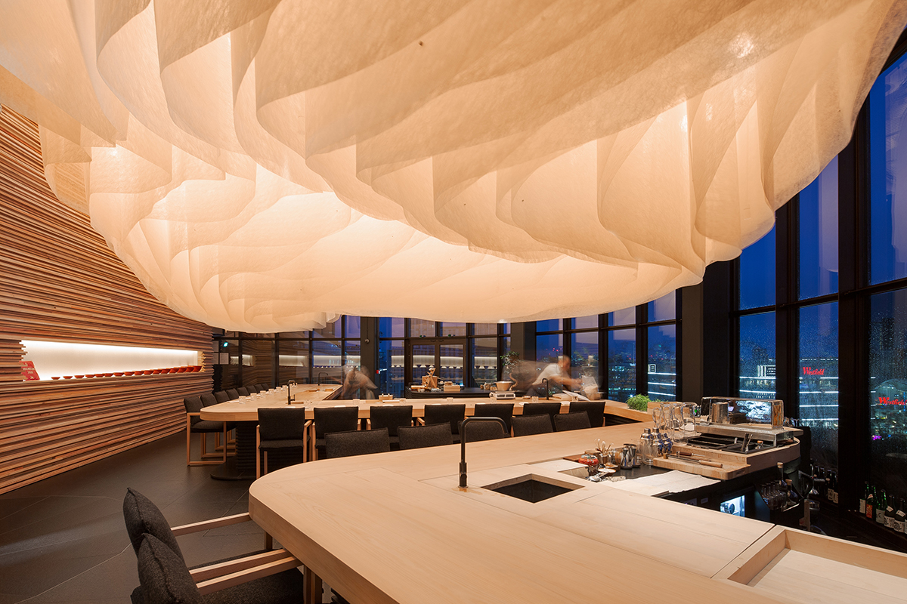
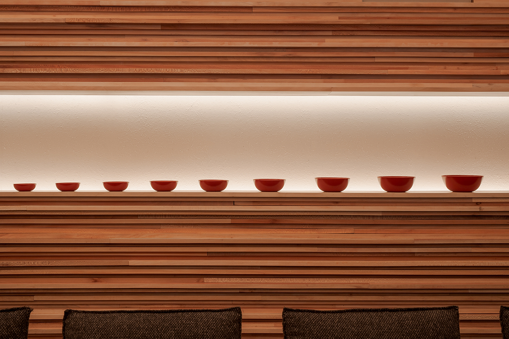
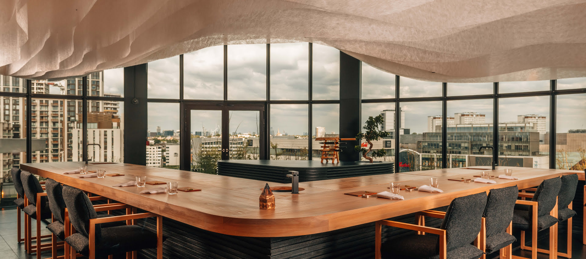
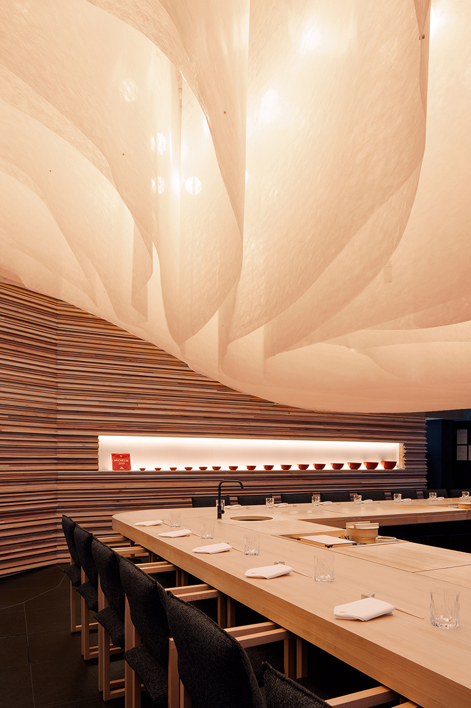
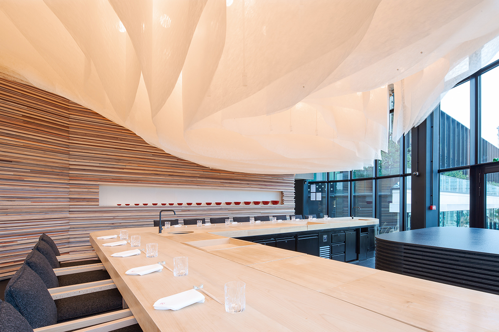
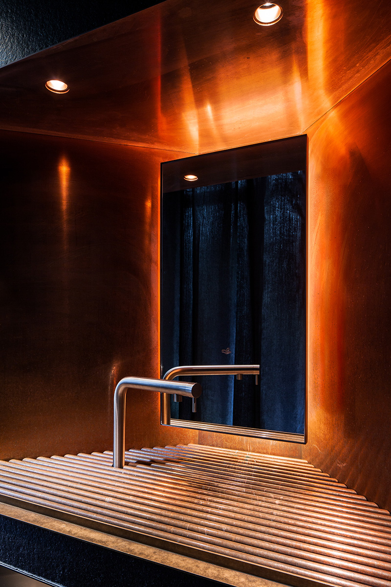
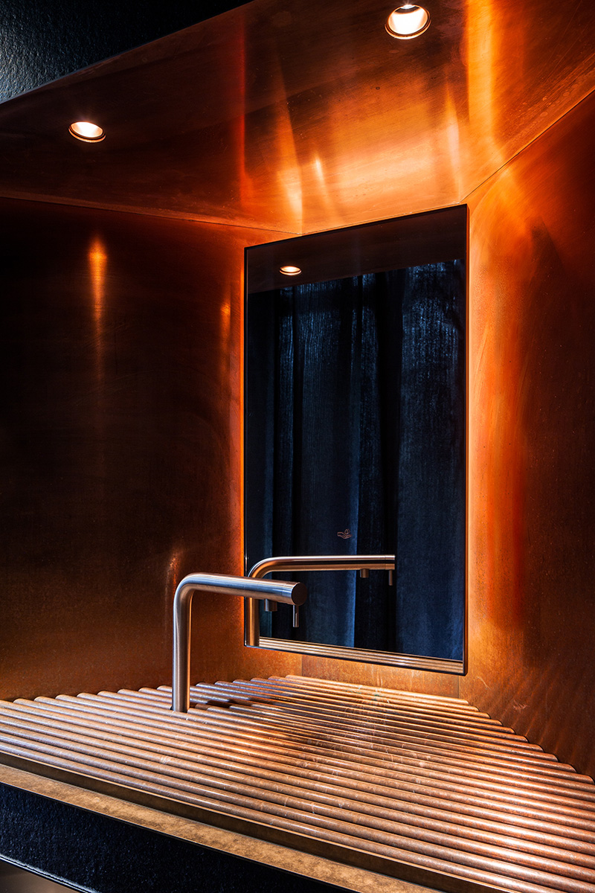
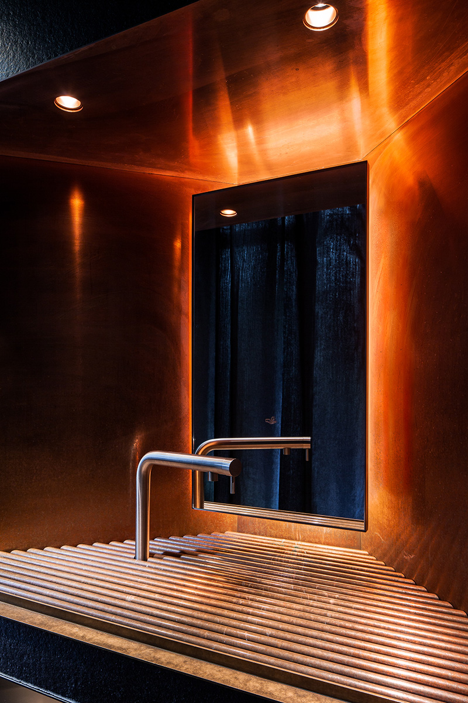

Endo at the Rotunda
Award: [Award Placeholder]
Location: London, United Kingdom
Program: Fine Dining Restaurant
Year: 2023
Team: Kengo Kuma and Associates
Info: Interior Design, 250 sqm
Endo at the Rotunda is a high-end Japanese restaurant located in the iconic BBC Television Centre in London. The interior design draws inspiration from traditional Japanese aesthetics while incorporating contemporary elements that complement the building's modernist architecture.
The space features a dramatic curved counter crafted from hinoki wood, creating an intimate dining experience where guests can observe the master chef's precise techniques. Custom lighting fixtures and carefully selected materials create a serene atmosphere that enhances the culinary journey.




 


Loading...